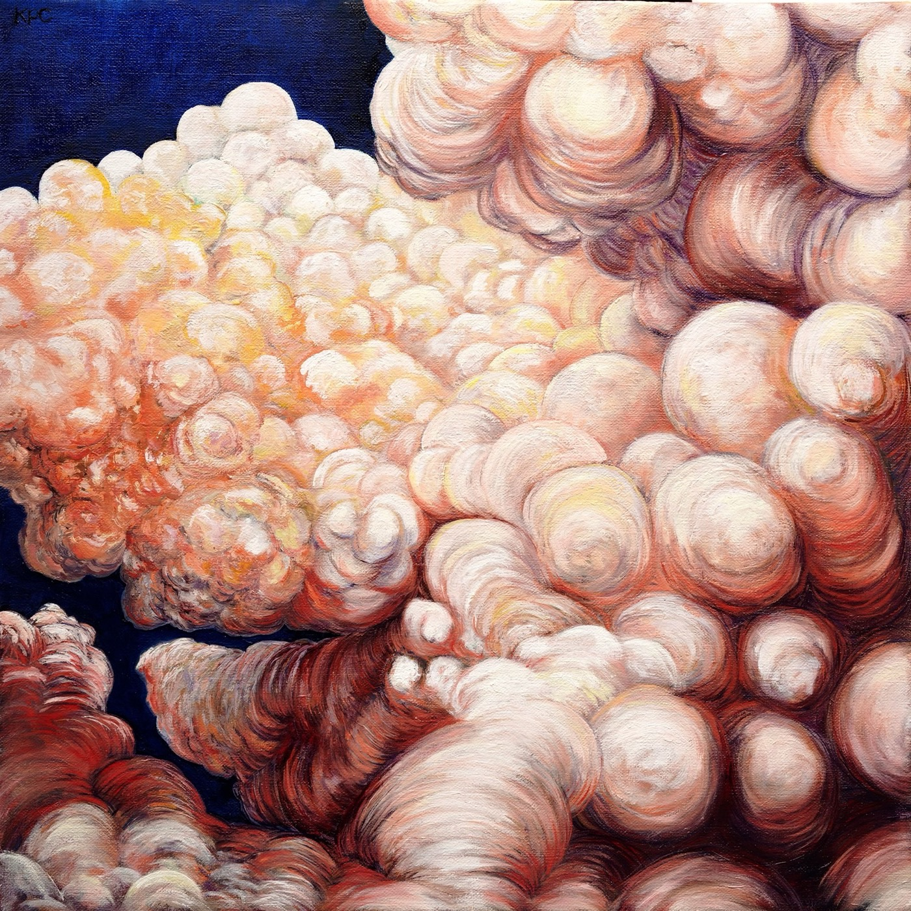
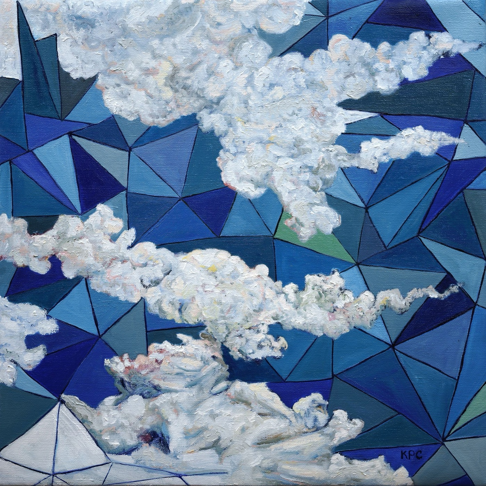
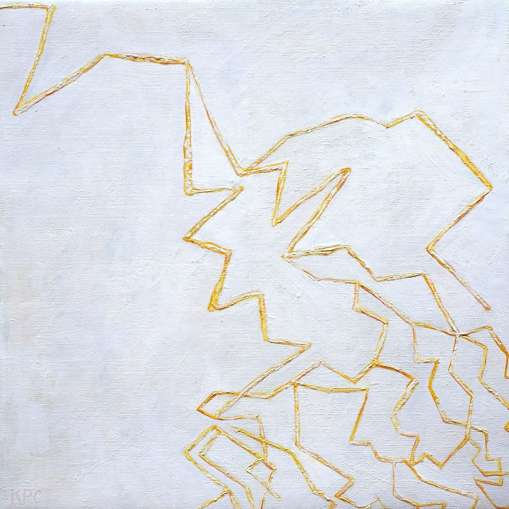
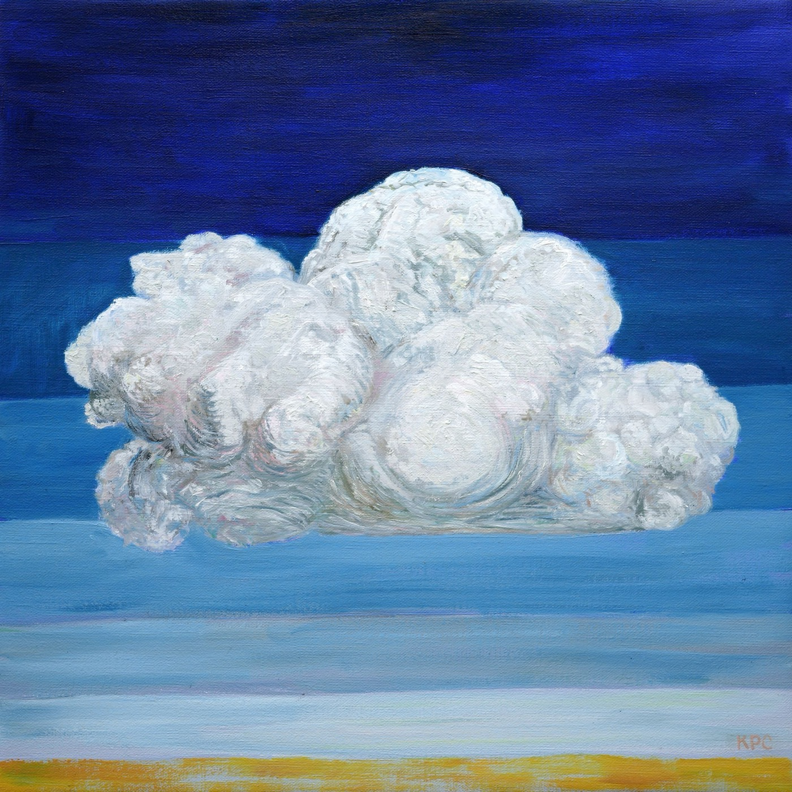
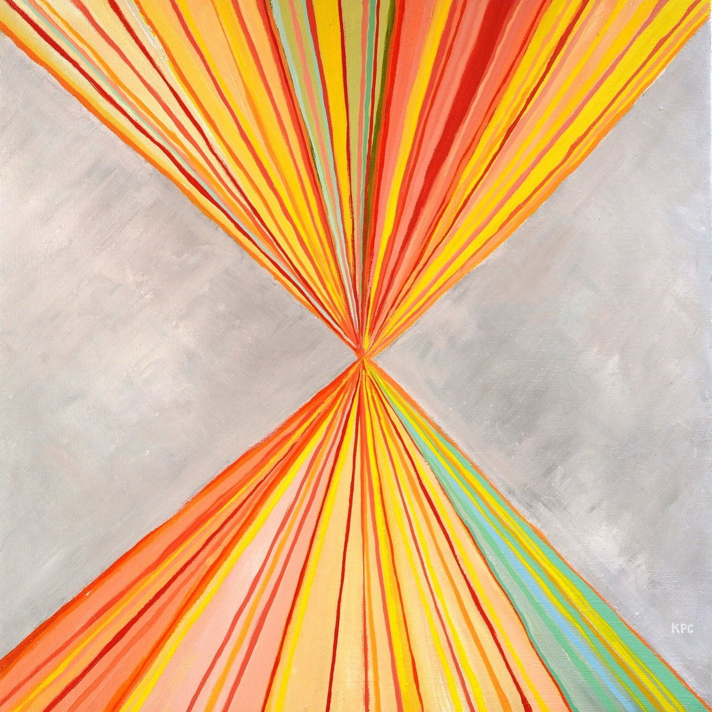
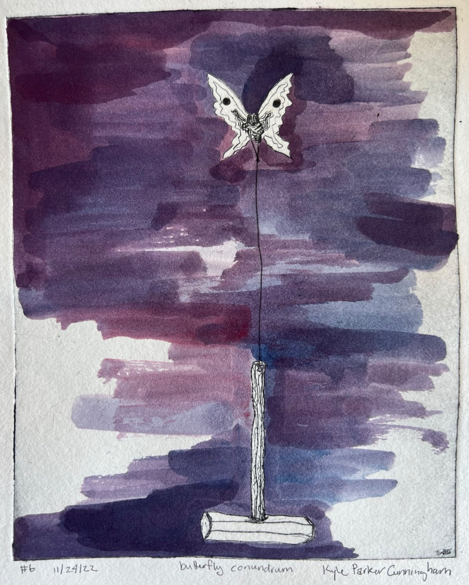

What the sky keeps and what it lets go. A season of weather paintings, a press run in the dark, and the slow work of photographing twenty years of missing panels.
The desert does not get much weather, so when it comes, it is an event. This spring the studio is full of sky — twelve panels of it finished, four still wet on the easel. They are not landscapes. They are attempts to paint what remains of a cloud after it has gone: the river it drew across the blue, the low-angle light it bent, the electric finger it pointed at the mesa for half a second in August.
— the season's work, I —


A painting is a record of weather that happened in a person.
studio note · march 2026
The series began two summers ago with a single cloud on the horizon — out there, distinct, refusing to arrive. Most of what hangs in this issue was painted with the monsoon either coming or just gone, which may be the only two tenses this landscape has. The newest panels have started letting the geometry show through the vapor — the season is bending back toward structure.
— the season's work, II —


The press runs at night
The drypoint plates wait until the heat breaks. This season the press is revisiting the panel paintings of a decade ago — the butterflies, the airlift, the skull — translating brushwork into scribed line, edition by edition.
And in the flat files: twenty years of paintings that were never photographed are coming out, one by one, under north light.
2026-03-10 — reworking the press schedule
2026-02-15 — archive photography, week two
2026-01-28 — the periodic: first research